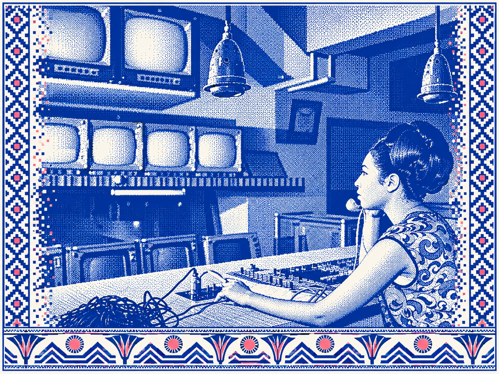
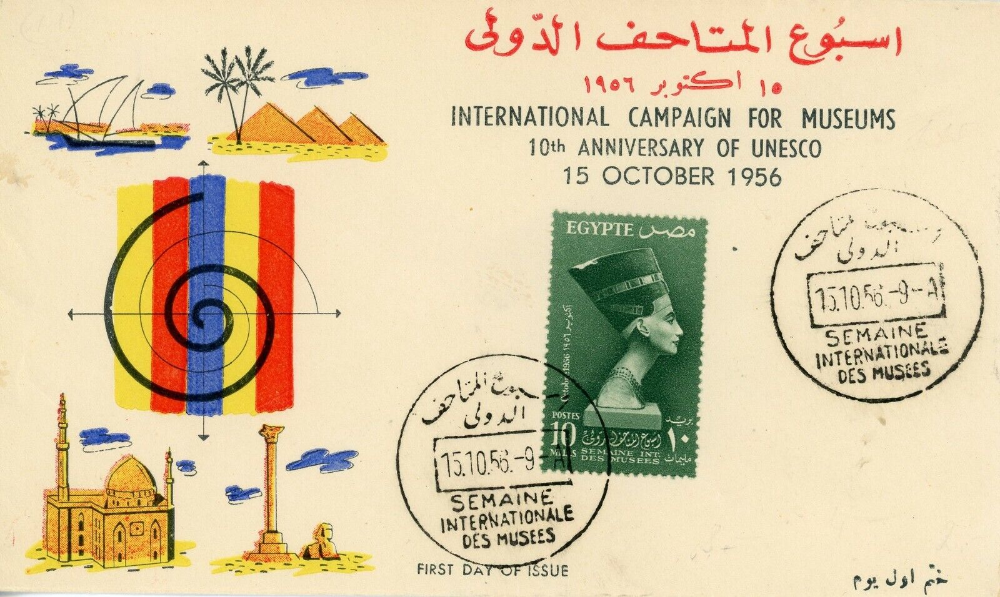
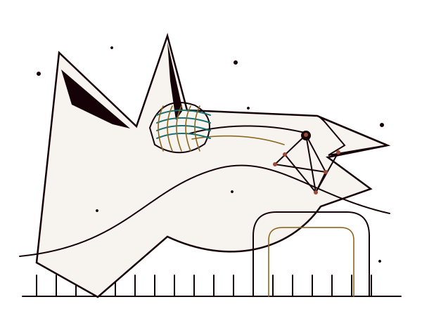
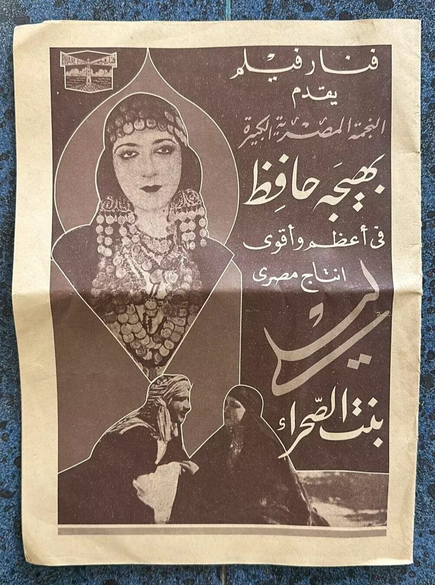

Receive documents, images and records with their source context intact.
↘THE COMPANY / A CULTURAL DATA NETWORKCulture is connected.
Culture is connected.
Its data should be, too.
GMD brings Egyptian cultural material into a connected record: we collect, describe, segment and distribute it so people can discover the stories behind works, images and places.
01 / COLLECT02 / DESCRIBE03 / CONNECT04 / DISTRIBUTE

DERIVED ART / EG-027
ORIGINAL AVAILABLE IN VIEWER
ORIGINAL AVAILABLE IN VIEWER
GMD / CONNECTED CULTURAL RECORDA source-led route from object to use
01 / MISSIONFrom an object
From an object
to a living network.
One photo can lead to a film, a venue, a person, a text and a dataset. The links matter as much as the object.
Structure titles, dates, subjects, media and uncertain fields without hiding gaps.
↘Link works with people, places, topics and the evidence behind each assertion.
↘Prepare documented experiences and licensed data routes for approved uses.

EG-011 / SOURCE OBJECT02 / COLLECTIONSA picture has
A picture has
more than one story.
An archival object is never just a thumbnail. The full sheet, original language, source trail and known gaps stay beside any editorial interpretation.
DRAWING / NEW VISUAL LANGUAGEA line can
A line can
open a story.
A new set of drawings translates rhythms found in the supplied Egyptian visual references into contemporary editorial space. The angular illustration carries a chapter; the collection record carries the evidence.


G2-014 / CONTEMPORARY STUDY / NOT A SITE DEPICTION03 / PRODUCT NETWORKDifferent doors.
Different doors.
One connected record.
Each product shapes a different use of cultural material. Shared identities and source links keep them coherent.

Film
Moving-image records, people and places around the screen.
Kayffa
Contextual reading that follows connections between ideas.
Datasets
Documented structured data for research and approved reuse.
Encyclopedia
Readable entries with sources and related subjects close at hand.
Tools
Working surfaces for describing, reviewing and connecting records.
Games
Playful discovery paths grounded in real collection context.
04 / SERVICESThe work behind
The work behind
the experience.
A proposed service sequence for organizations working with Egyptian cultural material.
Archive ingest
Inventory, preserve originals and attach intake context before transformation.
Curation & metadata
Create clear descriptions, subject terms and evidence-backed relationships.
Licensed distribution
Prepare access routes and reusable packages only when permissions are established.
AI-ready dataset preparation
Document fields, lineage, quality and use constraints for downstream workflows.
05 / DATA OFFERINGA dataset needs
Inspect component behaviors →
A dataset needs
a readable contract.
The schema specimen below shows what a release would explain before anyone downloads it. Values and availability are illustrative.
VERSION0.1 / SPECIMEN
LICENSETO BE CONFIRMED
LINEAGESOURCE → REVIEW → EXPORT
FIELDSID / TITLE / TYPE / SOURCE
06 / QUESTIONSA clear route
A clear route
to the answer.
What does GMD collect?
The proposed scope includes cultural images, moving-image records, print material and their context. Collection policy and rights need separate approval.
Can I reuse an image shown here?
No permission is implied by this specimen. Check the original source and rights record before any publication or redistribution.
Are the products connected already?
This page describes the intended network. Real product integration and data contracts remain implementation gates.
CONTACT / LOCAL SPECIMEN
Start a conversation.
This form demonstrates validation and confirmation. It sends no message.